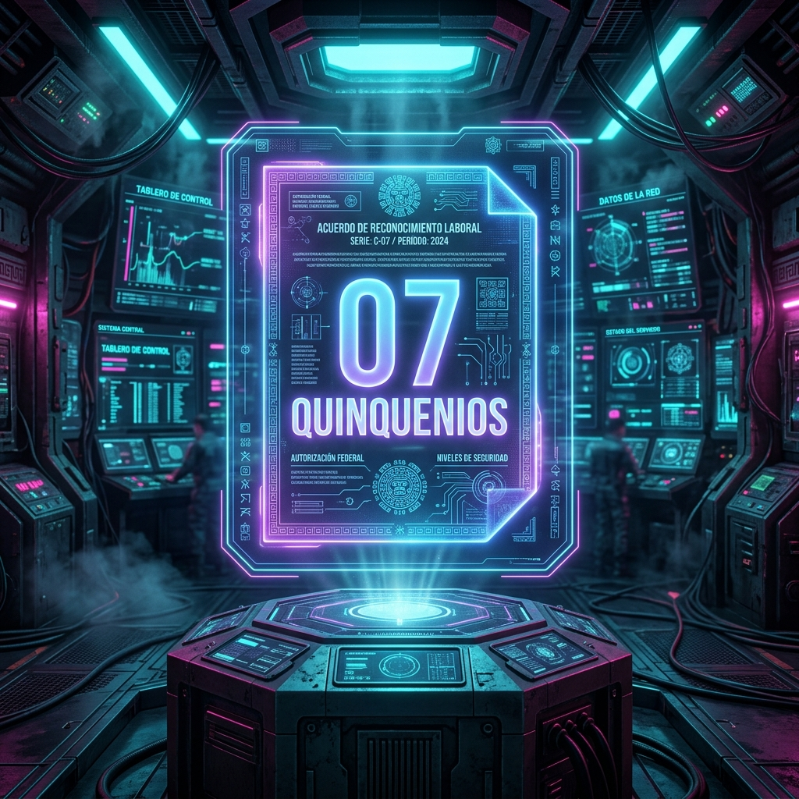

Se ha detectado una Simulación Salarial sistemática en el pago de quinquenios para el personal federalizado en Sonora. El concepto actual es un "complemento huérfano" diseñado para evadir la cotización íntegra ante el ISSSTE.
A. ARGUMENTO DE NIVELACIÓN: Si el sistema estatal (Secc 54) goza de mayor integración, el sistema federalizado (Secc 28) puede exigir la nivelación por el principio de "Igualdad ante la Ley".
B. INDEXACIÓN DINÁMICA: Sustituir los montos fijos (congelados por décadas) por un porcentaje directo del Concepto 07.
C. IMPACTO EN PENSIONES: La no integración representa una pérdida proyectada de hasta el 20% del sueldo regulador al jubilarse.
1. Documentar los montos "congelados" frente a la inflación histórica.
2. Iniciar el "Litigio Estratégico Colectivo" por Primacía de la Realidad.
3. Forzar la negociación del diferencial ante Hacienda (FONE).